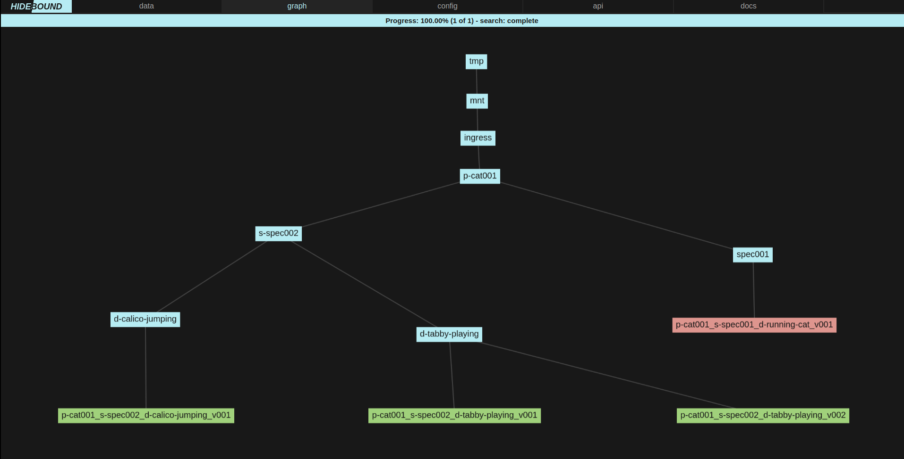

Introduction¶
A local database service for converting directories of arbitrary files into validated assets and derived metadata for export to databases like AWS S3 and MongoDB.
See documentation for details.
Installation¶
Python¶
pip install hidebound
Docker¶
Install docker
Install docker-machine (if running on macOS or Windows)
docker pull thenewflesh/hidebound:latest
Docker For Developers¶
Install docker
Install docker-machine (if running on macOS or Windows)
Ensure docker-machine has at least 4 GB of memory allocated to it.
git clone git@github.com:theNewFlesh/hidebound.gitcd hideboundchmod +x bin/hideboundbin/hidebound start
The service should take a few minutes to start up.
Run bin/hidebound --help for more help on the command line tool.
Overview¶
Hidebound is a local, dockerized; database, asset framework, asset validation and display service. Hidebound is not a competitor to databases like MongoDB, Amazon Web Service’s (AWS) S3, Postgres, etc. Hidebound enables developers to ingest arbitrary sets of files and output them as validated assets and metadata for consumption by databases like the aforementioned.
Hidebound is framework for validating, and extracting metadata from files and directories according, to user defined specifications. Assets are placed into a root directory (typically one reserved for Hidebound projects) and then discovered, validated, extracted, and copied or moved by Hidebound.
Dataflow¶
Data begins as files on disk. Hidebound creates a JSON-compatible dict from their name traits and file traits and then constructs an internal database table from them, one dict per row. All the rows are then aggregated by asset, and converted into a JSON blobs. Those blobs are then validated according to their respective specifications. Files from valid assets are then copied or moved into Hidebound’s data directory, according to their same directory structure and naming. Metadata is written to JSON files inside Hidebound’s metadata directory. Each file’s metadata is written as a JSON file in /hidebound/metadata/file, and each asset’s metadata (the aggregate of its file metadata) is written to /hidebound/metadata/asset. From their exporters, can export the valid asset data and its accompanying metadata to various locations, like an AWS S3 bucket.
Workflow¶
The acronynm to remember for workflows is CRUDES: create, read, update, delete, export and search. Those operations constitue the main functionality that Hidebound supports.
Create Asset¶
For example, an asset could be an image sequence, such as a directory full of PNG files, all of which have a frame number, have 3 (RGB) channels, and are 1024 pixels wide by 1024 pixels tall. Let’s call the specification for this type of asset “spec001”. We create an image sequence of a cat running, and we move it into the Hidebound projects directory.
Update¶
We call the update function via Hidebound’s web app. Hidebound creates a new database based upon the recursive listing of all the files within said directory. This database is displayed to us as a table, with one file per row. If we choose to group by asset in the app, the table will display one asset per row. Hidebound extracts metadata from each filename (not any directory name) as well as from the file itself. That metadata is called file_traits. Using only information derived from filename and file traits, Hidebound determines which files are grouped together as a single asset and the specification of that asset. Asset traits are then derived from this set of files (one or more). Finally, Hidebound validates each asset according to its determined specification. All of this data is displayed as a table within the web app. Importantly, all of the errors in filenames, file traits and asset traits are included.
Review Graph¶
 If we click on the graph tab, we are greeted by a hierarchical graph of all our assets in our project directory. Our asset is red, meaning it’s invalid. Valid asset’s are green, and all other files and directories, including parent directories, are cyan.
Diagnose and Repair¶
We flip back to the data tab. Using table within it, we search (via SQL) for our asset within Hidebound’s freshly created database. We see an error in one of the filenames, conveniently displayed in red text. The descriptor in one orf our filenames has capital letters in it. This violates Hidebound’s naming convention, and so we get an error. We go and rename the file appropriately and call update again. Our asset is now valid. The filenames are correct and we can see in the height and width columns, that it’s 1024 by 1024 and the channels column says it has three.
Create¶
Next we click the create button. For each valid asset, Hidebound generates file and asset metadata as JSON files within the hidebound/metadata directory. Hidebound also copies or moves, depending on the config write mode, valid files and directories into the hidebound/content directory. Thus we now have a hidebound directory that looks like this (unmentioned assets are collapsed behind the ellipses):
/tmp/hidebound
├── hidebound_config.json
│
├── specifications
│ └── specifications.py
│
├── data
│ ...
│ └── p-cat001
│ └── spec001
│ └── p-cat001_s-spec001_d-running-cat_v001
│ ├── p-cat001_s-spec001_d-running-cat_v001_c0000-0005_f0001.png
│ ├── p-cat001_s-spec001_d-running-cat_v001_c0000-0005_f0002.png
│ └── p-cat001_s-spec001_d-running-cat_v001_c0000-0005_f0003.png
│
├── metadata
├── asset
│ ...
│ └── a9f3727c-cb9b-4eb1-bc84-a6bc3b756cc5.json
│
└── file
...
├── 279873a2-bfd0-4757-abf2-7dc4f771f992.json
├── e50160ae-8678-40b3-b766-ee8311b1f0c9.json
└── ea95bd79-cb8f-4262-8489-efe734c5f65c.json
Export¶
This directory contains only valid assets and their associated metadata. We are now free to export this data to various databases, such as AWS S3, MongoDB, and Girder. Exporters are are defined within the exporters subpackage. They expect a populated hidebound directory and use the files and metadata therein to export hidebound data. Exporter configurations are stored in the hidebound conig, under the “exporters” key. Below we can see the results of an export to Girder in the Girder web app.

Delete¶
Once this export process is complete, we may click the delete button. Hidebound deletes the hidebound/content and hidebound/metdata directories and all their contents. If write_mode in the Hidebound configuration is set to “copy”, then this step will merely delete data created by Hidebound. If it is set to “move”, then Hidebound will presumably delete, the only existing copy of out asset data on the host machine.
Naming Convention¶
Hidebound is a highly opinionated framework that relies upon a strict but composable naming convention in order to extract metadata from filenames. All files and directories that are part of assets must conform to a naming convention defined within that asset’s specification.
In an over-simplified sense; sentences are constructions of words. Syntax concerns how each word is formed, grammar concerns how to form words into a sentence, and semantics concerns what each word means. Similarly, filenames can be thought of as crude sentences. They are made of several words (ie fields). These words have distinct semantics (as determines by field indicators). Each word is constructed according to a syntax (ie indicator + token). All words are joined together by spaces (ie underscores) in a particular order as determined by grammar (as defined in each specification).
Syntax¶
Names consist of a series of fields, each separated by a single underscore “_”, also called a field separator.
Periods, “.”, are the exception to this, as it indicates file extension.
Legal characters include and only include:
Name |
Characters |
Use |
|---|---|---|
Underscore |
_ |
only for field separation |
Period |
. |
only for file extensions |
Lowercase letter |
a to z |
everything |
Number |
0 to 9 |
everything |
Hyphen |
token separator |
Fields are comprised of two main parts:
Name |
Use |
|---|---|
Field indicator |
determines metadata key |
Field token |
a set of 1+ characters that define the field’s data |
Example Diagrams¶
In our example filename:
p-cat001_s-spec001_d-running-cat_v001_c0000-0005_f0003.png the
metadata will be:
{
'project': 'cat001',
'specification': 'spec001',
'descriptor': 'running-cat',
'version': 1,
'coordinate': [0, 5],
'frame': 3,
'extension': 'png',
}
The spec001 specification is derived from the second field of this filename:
field field
indicator token
| __|__
| | |
p-cat001_s-spec001_d-running-cat_v001_c0000-0005_f0003.png
|_______|
|
field
Part |
Value |
|---|---|
Field |
s-spec001 |
Field indicator |
s- |
Field token |
spec001 |
Derived metadata |
{specification: spec001} |
Special Field Syntax¶
Projects begin with 3 or 4 letters followed by 1 to 4 numbers
Specifications begin with 3 or 4 letters followed by 3 numbers
Descriptors begin with a letter or number and may also contain hyphens
Descriptors may not begin with the words master, final or last
Versions are triple-padded with zeros and must be greater than 0
Coordinates may contain up to 3 quadruple-padded numbers, separated by hyphens
Coordinates are always evaluated in XYZ order. For example:
c0001-0002-0003produces{x: 1, y: 2, z: 3}.Each element of a coordinate may be equal to or greater than zero
Frames are quadruple-padded and are greater than or equal to 0
Extensions may only contain upper and lower case letters a to z and numbers 0 to 9
Semantics¶
Hidebound is highly opionated, especially with regards to its semantics. It contains exactly seven field types, as indicated by their field indicators. They are:
Field |
Indicator |
|---|---|
project |
p- |
specification |
s- |
descriptor |
d- |
version |
v |
coordinate |
c |
frame |
f |
extension |
. |
Grammar¶
The grammar is fairly simple:
Names are comprised of an ordered set of fields drawn from the seven above
All names must contain the specification field
All specification must define a field order
All fields of a name under that specification must occcur in its defined field order
Its is highly encouraged that fields be defined in the following order:
project specification descriptor version coordinate frame extension
The grammatical concept of field order here is one of rough encapsulation:
Projects contain assets
Assets are grouped by specification
A set of assets of the same content is grouped by a descriptor
That set of assets consists of multiple versions of the same content
A single asset may broken into chunks, identified by 1, 2 or 3 coordinates
Each chunk may consist of a series of files seperated by frame number
Each file has an extension
Encouraged Lexical Conventions¶
Specifications end with a triple padded number so that they may be explicitely versioned. You redefine an asset specification to something slightly different, by copying its specification class, adding one to its name and change the class attributes in some way. That way you always maintain backwards compatibility with legacy assets.
Descriptors are not a dumping ground for useless terms like wtf, junk, stuff, wip and test.
Descriptors should not specify information known at the asset specification level, such as the project name, the generic content of the asset (ie image, mask, png, etc).
Descriptors should not include information that can be known from the preceding tokens, such as version, frame or extension.
A descriptor should be applicable to every version of the asset it designates.
Use of hyphens in descriptors is encouraged.
When in doubt, hyphenate and put into the descriptor.
Project Structure¶
Hidebound does not formally define a project structure. It merely stipulates that assets must exist under some particular root directory. Each asset specification does define a directory structure for the files that make up that asset. Assets are divided into 3 types: file, sequence and complex. File defines an asset that consists of a single file. Sequence is defined to be a single directory containing one or more files. Complex is for assets that consist of an arbitrarily complex layout of directories and files.
The following project structure is recommended:
project
|-- specification
|-- descriptor
|-- asset # either a file or directory of files and directories
|- file
/tmp/projects
└── p-cat001
├── s-spec002
│ ├── d-calico-jumping
│ │ └── p-cat001_s-spec002_d-calico-jumping_v001
│ │ ├── p-cat001_s-spec002_d-calico-jumping_v001_f0001.png
│ │ ├── p-cat001_s-spec002_d-calico-jumping_v001_f0002.png
│ │ └── p-cat001_s-spec002_d-calico-jumping_v001_f0003.png
│ │
│ └── d-tabby-playing
│ ├── p-cat001_s-spec002_d-tabby-playing_v001
│ │ ├── p-cat001_s-spec002_d-tabby-playing_v001_f0001.png
│ │ ├── p-cat001_s-spec002_d-tabby-playing_v001_f0002.png
│ │ └── p-cat001_s-spec002_d-tabby-playing_v001_f0003.png
│ │
│ └── p-cat001_s-spec002_d-tabby-playing_v002
│ ├── p-cat001_s-spec002_d-tabby-playing_v002_f0001.png
│ ├── p-cat001_s-spec002_d-tabby-playing_v002_f0002.png
│ └── p-cat001_s-spec002_d-tabby-playing_v002_f0003.png
│
└── spec001
└── p-cat001_s-spec001_d-running-cat_v001
├── p-cat001_s-spec001_d-Running-Cat_v001_c0000-0005_f0002.png
├── p-cat001_s-spec001_d-running-cat_v001_c0000-0005_f0001.png
└── p-cat001_s-spec001_d-running-cat_v001_c0000-0005_f0003.png
Application¶
The Hidebound web application has five sections: data, graph, config, api and docs.
Data¶
The data tab is the workhorse of the Hidebound app.
Its functions are as follows:
Search - Search the updated database’s data via SQL
Dropdown - Groups search results by file or asset
Init - Initialized the database with the current config
Update - Initializes and updates the database with the current config
Create - Copies or moves valid assets to hidebound/content directory and creates JSON files in hidebound/metadata directory
Delete - Deletes hidebound/content and hidebound/metadata directories
Prior to calling update, the application will look like this:
Graph¶
The graph tab is used for visualizing the state of all the assets within a root directory.
It’s color code is as follows:
Color |
Meaning |
|---|---|
Cyan |
Non-asset file or directory |
Green |
Valid asset |
Red |
Invalid asset |
Config¶
The config tab is used for uploading and writing Hidebound’s configuration file.
Its functions are as follows:
Name |
Function |
|---|---|
Upload |
Upload a config JSON file |
Write |
Write config to hidebound/hidebound_config.json |
Errors¶
Hidebound is oriented towards developers and technically proficient users. It displays errors in their entirety within the application.